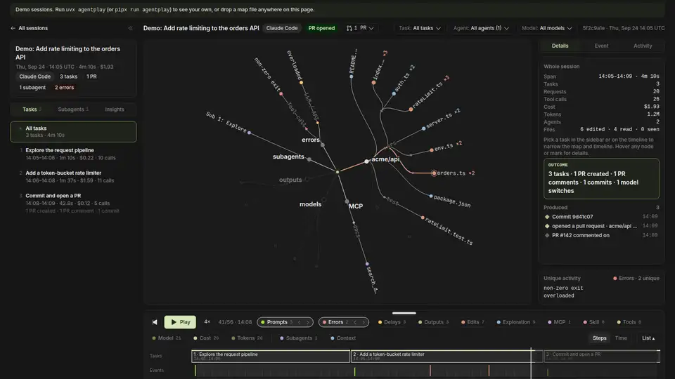
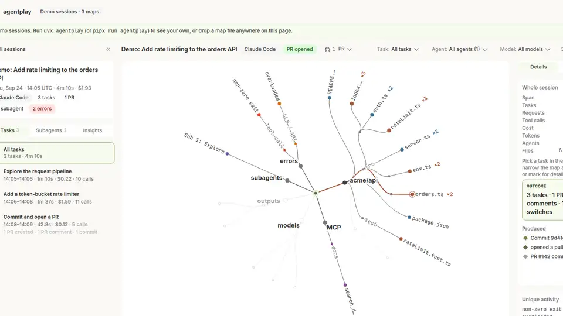

See exactly what your coding agent did: replay any session as a map and a timeline with agentplay
Your coding agent's transcripts already record everything it did — which files it read before editing, which commands it retried, which MCP servers failed. Almost nobody looks at that data. agentplay makes it readable.
uvx agentplay does it all with no install, no account and no network calls; the viewer runs on 127.0.0.1.- What: agentplay replays coding-agent sessions as a radial map (files, tools, MCP servers, subagents, models) plus a play-through timeline of every event.
- Project: Entelligence-AI/agentplay, Apache 2.0, launched 2026-10-14, 296 GitHub stars (verified 2026-10-23).
- Install: Python 3.11+, zero runtime dependencies; run with
uvx agentplay— no install, no account, no API key. - Privacy: everything stays on your machine; the viewer is served from 127.0.0.1 with no telemetry; set
AGENTPLAY_NO_NETWORK=1to disable even the optional email signup. - Agents covered: Claude Code, Codex, Cursor, GitHub Copilot CLI, OpenCode, Kiro and Gemini CLI — read straight from their local transcript stores.
- Limits: Cursor sessions carry no token/cost figures; costs are estimates from public list prices; maps cap at 20,000 events; transcripts over 512 MB are skipped.
After a long Claude Code session ships a PR, a simple question hangs in the air: what did it actually do? The transcript says — every file read, every command retried, every subagent dispatched — but scrolling JSONL is not auditing. agentplay turns those logs into something you can actually inspect: a radial map of everything the session touched, and a timeline you can play back event by event.
It is a Python tool from Entelligence (open source, Apache 2.0, ~300 GitHub stars after its mid-October launch) that parses the session stores already sitting on your disk — ~/.claude, ~/.codex, ~/.cursor and friends — and builds a redacted replay for each session. No account, no API key, and your data never leaves your machine.
What you'll need
- A machine with Python 3.11 or newer
uvinstalled (orpipx/ plainpip) — agentplay has zero runtime dependencies beyond the standard library- At least one coding-agent session on the machine: Claude Code, Codex, Cursor, GitHub Copilot CLI, OpenCode, Kiro or Gemini CLI
- About ten minutes
Replay your first session
1. Run agentplay without installing it
uvx agentplay
That single command finds the agent sessions already on your machine, builds a redacted replay of each one, and opens a local viewer. Alternatives from the README: pipx run agentplay, or pip install agentplay if you want it on your PATH permanently. From source, the repo even ships an install.md written specifically for a coding agent to follow.
2. See which agents live on your machine
agentplay agents
This shows which coding agents were found locally. Claude Code gets the highest fidelity — its maps are read straight from the JSONL, including hooks, compactions, stop reasons and latency. Cursor's billed-usage lookup is deliberately disabled (agentplay will not call Cursor's API with your stored token), which is why Cursor sessions show no token or cost figures.
3. Build the session maps
agentplay build --since 30d
build compiles maps for new or changed sessions. --since accepts windows like 12h, 2w or an absolute date (2026-09-01). Add --agents claude-code,codex to limit scope, or --rebuild to force a fresh pass over everything. agentplay list then shows what is stored; add --json for machine-readable output.
4. Open the viewer and read the map
agentplay view

The default command builds any changed maps and opens the viewer, served from 127.0.0.1 — it loads no remote fonts or scripts. You get a radial map of every file, tool, MCP server, subagent and model the session touched, with a replay timeline underneath and details on the right. Server options: --port 7317, --no-open, --no-build.
5. Play the timeline to audit failures
AGENTPLAY_NO_NETWORK=1 agentplay view

Scrub the timeline and you can answer questions the transcript never volunteers at a glance: which files the agent read before editing, how many times it retried the same failing command, where the context window filled up, which subagents came back empty, and which PRs, commits and tickets the session produced. The one network call in the whole tool is an optional email signup in the viewer — setting AGENTPLAY_NO_NETWORK=1 switches it off entirely. For sharing, --path-mode dirs_only and --no-titles reduce what a map reveals.
6. Export and share a map safely
agentplay export --limit 1 --json
agentplay import teammate-session.json.gz
export writes one session's map to a .json or .json.gz file (the agentplay/v1 format, fully documented in docs/format.md); import folds a teammate's or another machine's map into your local store. Maps are redacted by design — agentplay was built so you can show one to someone else without worrying about what is in it — and there is no upload or telemetry anywhere in the loop.
What you built
A local, replayable audit of your coding agents: a radial map of everything each session touched and a playable timeline of its events, browseable in a browser tab served from your own machine. It answers the questions that matter when an agent burns through your budget — what did it read before editing, what failed and how often, where did the context go — without phoning anything home.
Honest limitations
- No token or cost figures for Cursor. Cursor does not write billed usage to disk, and agentplay refuses to fetch it from Cursor's API.
- Costs are estimates from public list prices in
_core/pricing.py— plan, enterprise and batch pricing are not modelled. - Very large sessions are capped at 20,000 events per map (flagged
truncated), and transcripts over 512 MB are skipped. - Created vs. modified is fuzzy — the builder runs after the session, so a whole-file
Writeis only recorded as an edit when the session had already seen the file. - Windows works but is less tested than macOS and Linux; the README notes paths outside the home directory (like
%APPDATA%for Copilot in VS Code) get less exercise.
Frequently asked questions
Do I need an API key or account to use agentplay?
No. Run uvx agentplay and it works entirely locally: no install, no account, no API key. Your session data never leaves your machine and there is no usage telemetry or update check.
Which coding agents does it work with?
Claude Code, Codex (CLI and IDE), Cursor (agent CLI and IDE composer), GitHub Copilot CLI, OpenCode, Kiro and Gemini CLI. It reads their local transcript stores — ~/.claude, ~/.codex, ~/.cursor and similar — and builds a redacted replay for each session.
What can I actually see in a replay?
A radial map of every file, tool, MCP server, subagent and model the session touched, plus a playable timeline of events: which files were read before being edited, which commands failed and how often they were retried, where the context window filled up, and which PRs, commits and tickets the session produced. Limits: Cursor sessions show no token or cost figures, costs elsewhere are estimates, and maps cap at 20,000 events.